01
Part 1 · Weak MD5 Hashes
I started by hashing apple123, pasting the MD5 into CrackStation, and watching
it reverse instantly.
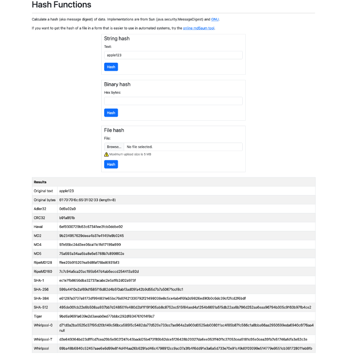
apple123.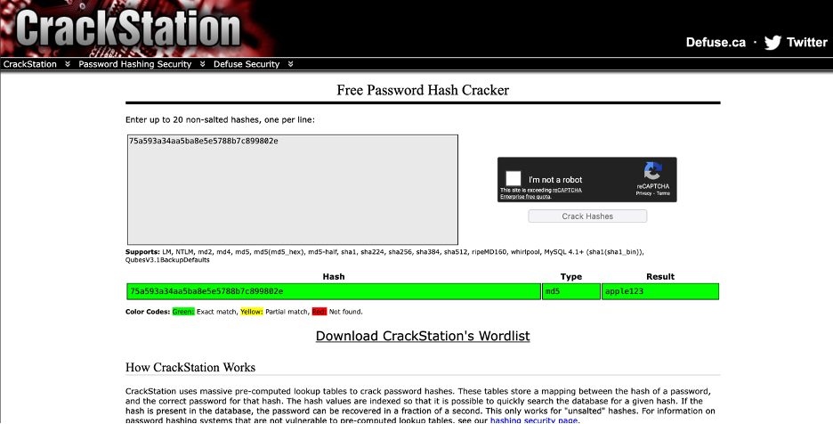
apple123.A slightly longer variant, applesauce1234, cracked the same way—one button,
immediate hit.
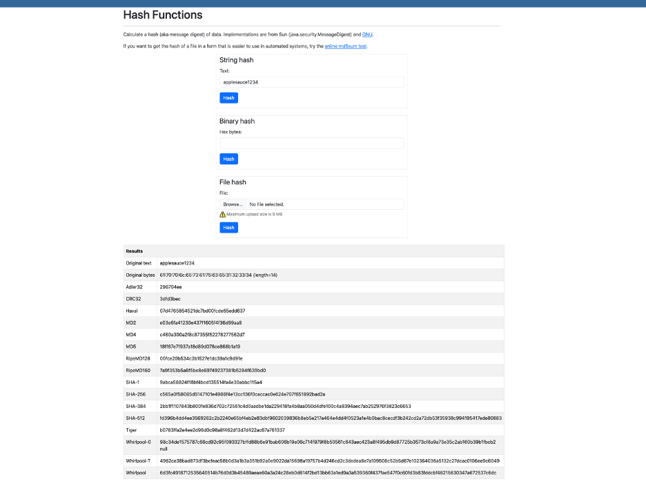
applesauce1234.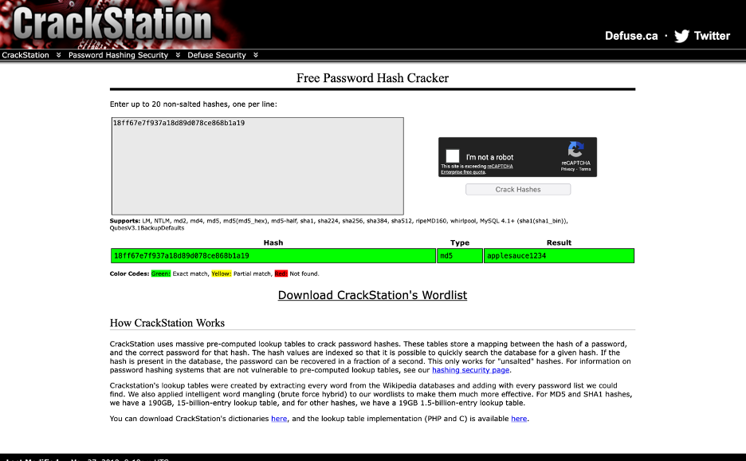
applesauce1234.I also hashed hello, password, and
stophackingme. All three MD5s cracked immediately when submitted together.
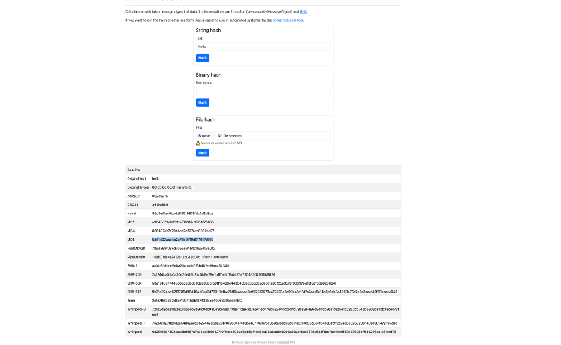
hello.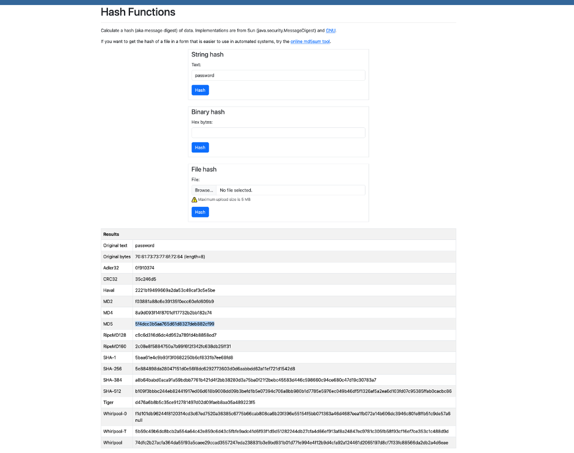
password.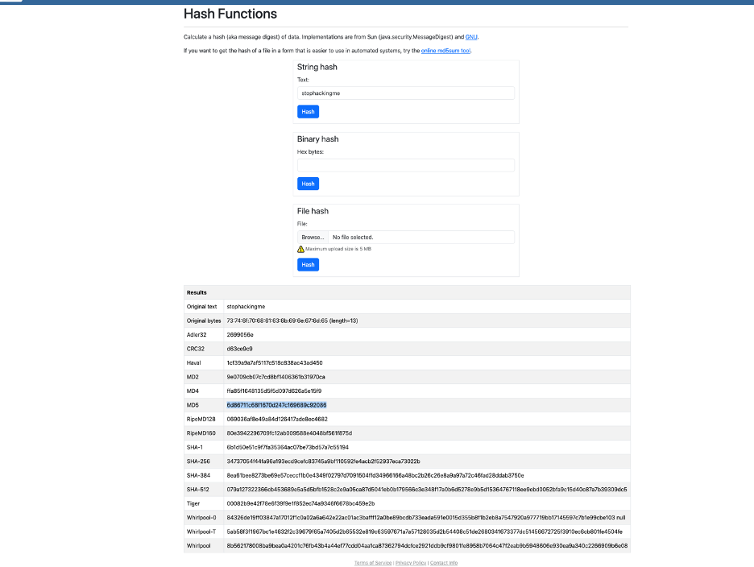
stophackingme.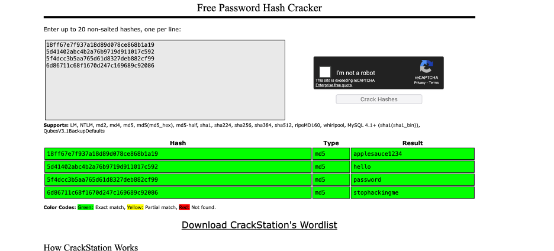
Then I tried a longer, unique string that does not resemble a real password I use. That MD5 came back as Not found—it was not in CrackStation’s precomputed tables.
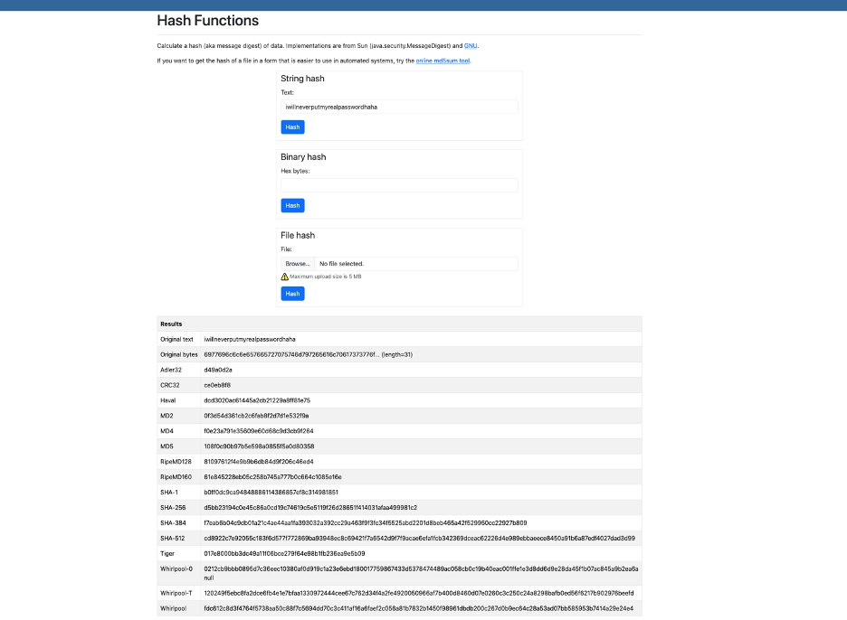
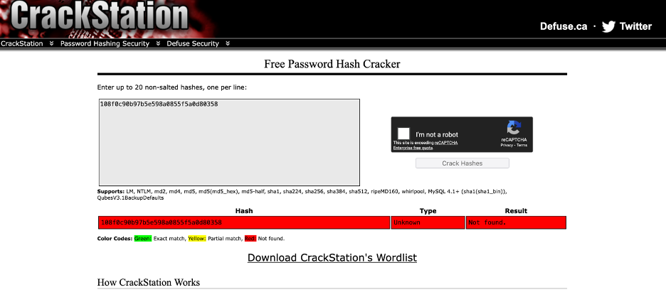
Weak unsalted hashes fall out as fast as you can click Crack. Longer unique passphrases are much less likely to sit in public rainbow/lookup tables—and real systems should also use modern salted password hashing, not bare MD5.
02
Part 2 · KeePassXC on macOS
On Mac I installed KeePassXC (the KeePass-family client for macOS/Linux). I used CyberChef’s To Base64 operation to build a longer master password for the database.
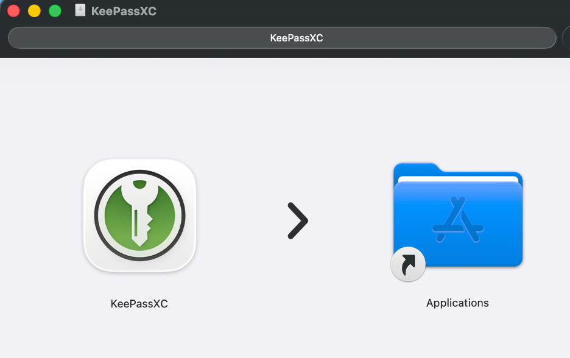
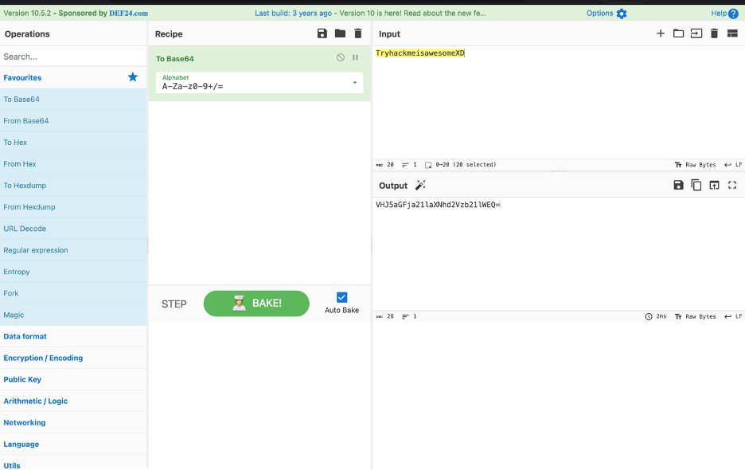
I created a Websites group and added an entry for my MetaCTF account (plus another personal account entry during the lab). After locking and unlocking the database with the master password, I used Open URL and copy/paste to fill the login form—and signed in successfully.
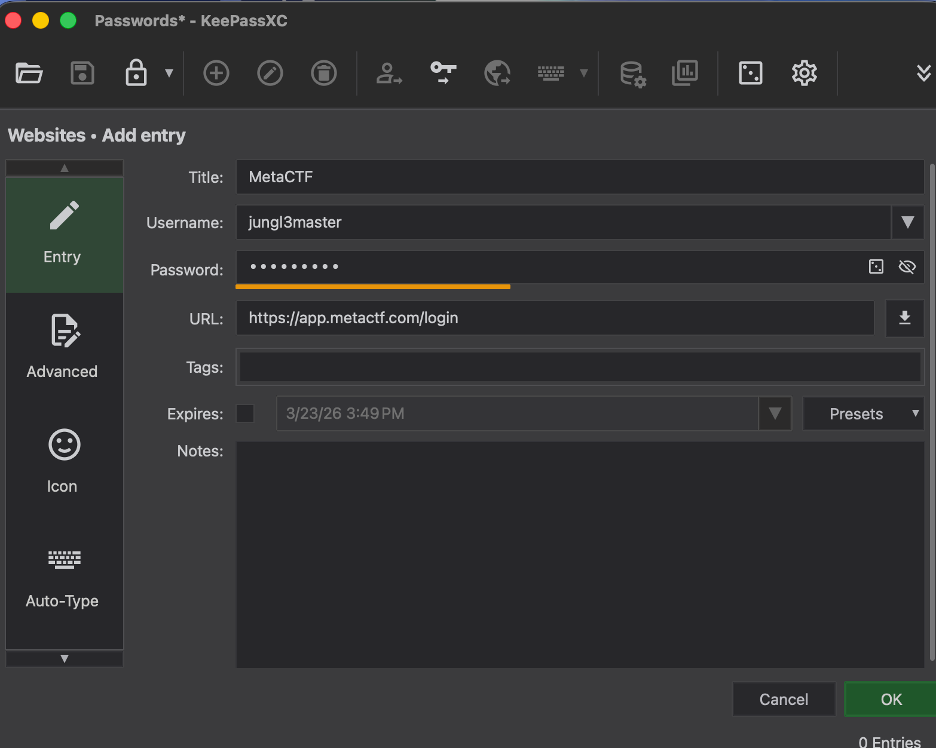
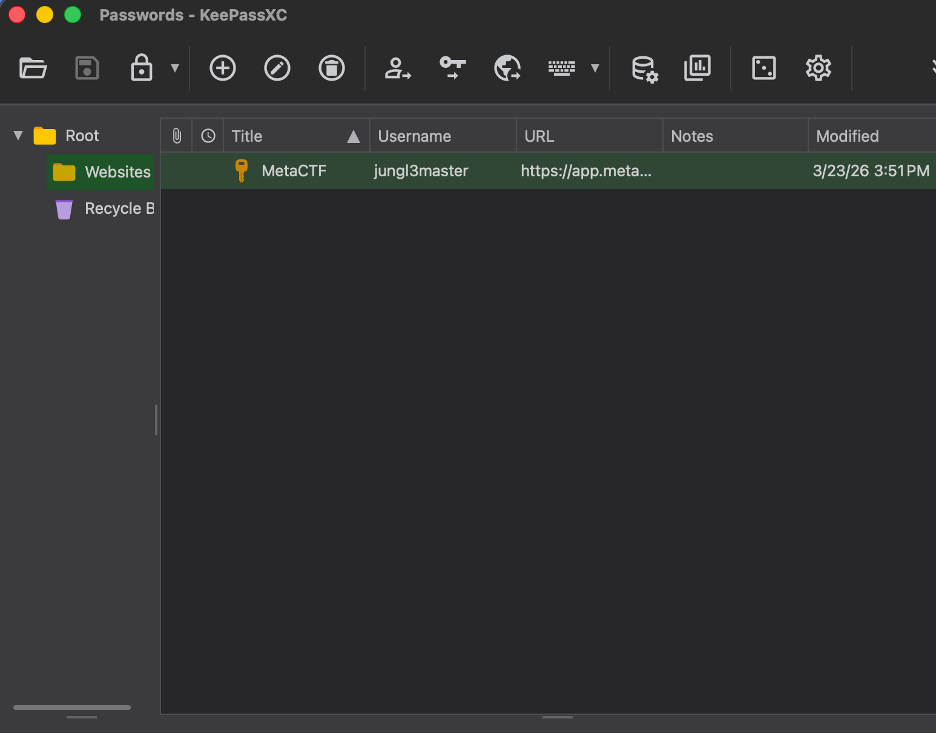
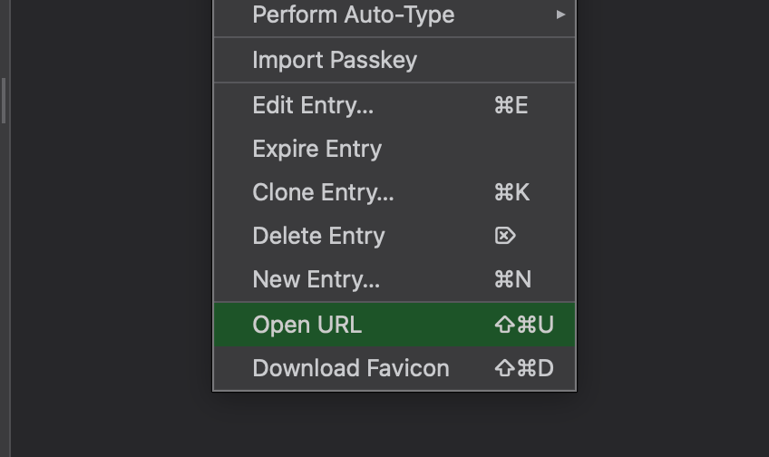
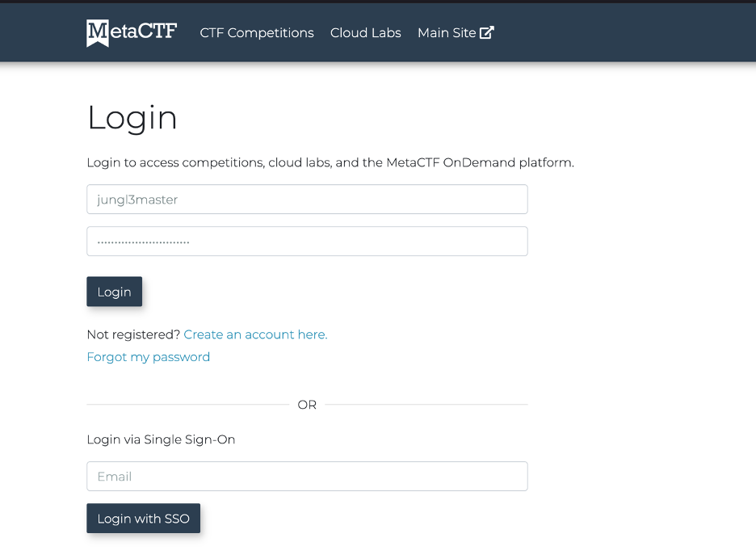
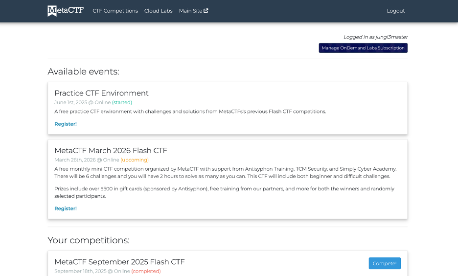
03
Takeaways
KeePassXC makes it easy to generate and store strong passwords, and the strength meter pushes you away from junk. The tradeoff is obvious: one master password (or a lost vault) is a single point of failure. I have forgotten a KeePass master password before—which is why I want to keep the tool in daily use carefully, with a master secret I can actually remember and protect.